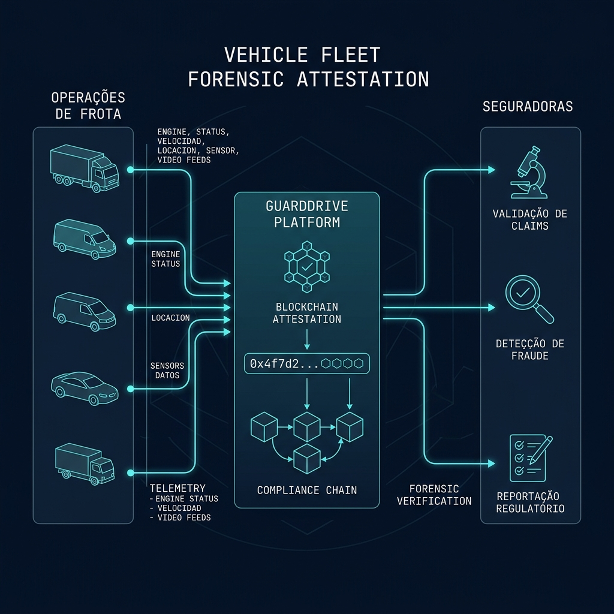

Elimine fraudes de sinistros e reduza o custo de apólices com o Selo Soberano™ NFC. Atestação física de integridade com validade jurídica e rastreabilidade na blockchain.
A falta de evidências auditáveis nas frotas dificulta a comprovação da causa raiz de sinistros, expondo a operação a fraudes dispendiosas e reajustes de apólice.
Sem dados forenses do comportamento do veículo, frotistas e seguradoras enfrentam batalhas jurídicas longas sobre a responsabilidade civil de colisões.
Seguradoras levam semanas auditando relatórios manuais de frotistas para autorizar indenizações, paralisando veículos e gerando gargalos operacionais.
Dispositivos bloqueadores de sinal cortam a comunicação do rastreador convencional, deixando frotas corporativas vulneráveis a roubos sem nenhum registro forense.
Divergências de informações sobre a conduta do condutor e o estado do veículo geram desgaste e contestações mútuas no momento de acionar a apólice.
Sem uma caixa-preta inviolável e atestada on-chain, o valor residual dos ativos de frota deprecia aceleradamente devido à desconfiança sobre o histórico operacional.
O Selo Soberano™ é um adesivo NFC colado no para-brisa ou chassi do veículo. Sem obra, sem OBD, sem risco à garantia original. Implantação de uma frota completa em horas.
Captura contínua de telemetria operacional de forma blindada contra bloqueadores de sinal.
Registro e atestação de integridade on-chain de cada evento crítico, gerando prova matemática.
Geração imediata de relatórios e laudos criptográficos prontos para análise automatizada de seguradoras.
Otimização de custos, redução de sinistralidade e negociação de prêmios de seguro mais competitivos.

Diagrama 01. Fluxo de Validação Forense e Geração de Prova Criptográfica para Frotas e Seguradoras
Automatização de auditorias operacionais e vistorias de veículos, eliminando adulterações e processos manuais lentos.
Simplifique a conformidade com as exigências de seguradoras, garantindo conformidade contratual em tempo real.
Acompanhamento criptográfico contínuo de rotas e eventos, mantendo a integridade jurídica e a garantia de fábrica do veículo.
Fornecimento instantâneo de laudos criptográficos e atestados de integridade a seguradoras, reduzindo o tempo de pagamento.
Proteção ativa contra jammers e registros falsificados, permitindo investigações judiciais irrefutáveis de sinistros.
Demonstre conformidade forense para negociar melhores termos e prêmios de seguro reduzidos para a frota.
Cada verificação gera uma pontuação de 0 a 100% que quantifica a confiabilidade e saúde do ativo para seguradoras.
Validação Operacional
Plataforma central que consolida a telemetria forense da frota, automatiza auditorias e atesta eventos de forma transparente para seguradoras.
Identidade Verificável
Disponível em dois formatos: V1 Passivo — Selo Soberano™ NFC (adesivo, implantação imediata, a partir de R$ 14,90/mês no plano Standard); e V2 Ativo — Dongle OBD+IMU com telemetria contínua a 50ms para operações críticas.
Scanner de Borda
Aplicativo pericial iOS/Android que atesta eventos lendo tags via NFC e emite Laudos GuardDrive auditáveis e juridicamente válidos.
Inteligência Operacional
Análise preditiva de riscos operacionais da frota e métricas de sinistralidade prontas para tomada de decisão da diretoria e seguradoras.
GuardDrive integra hardware de identidade veicular, inteligência de dados e barreiras de conformidade para criar uma infraestrutura de confiança inabalável nas operações corporativas e de seguros.
Arquitetura. Fluxo de Dados e Atestação entre GuardDrive™, GuardTag™ e Intelligence Hub
Selo Soberano™ NFC V1 Passivo. Ideal para auditoria rápida e vistorias frequentes sem custos de infraestrutura OBD.
Selo Soberano™ NFC V2 Criptográfico. Integridade reforçada por criptografia militar e cadeia de custódia.
Dispositivo Ativo OBD+IMU. Telemetria e telemetria contínua a 50ms para frotas e operações críticas.
Acesse materiais técnicos e análise personalizada de ROI para sua frota. Nosso acesso é protegido por NDA operacional para garantir confidencialidade.
Respostas diretas, sem jargão técnico.
Sim. Cada evento registrado pelo GuardDrive™ gera um laudo técnico com assinatura digital rastreável, carimbo de tempo e cadeia de custódia documentada. Esse material é aceito como evidência técnica em processos administrativos, arbitragens e ações judiciais — eliminando a necessidade de perícia presencial após o fato.
O onboarding de frotas no plano Standard ou Premium é concluído em poucas horas, sem instalação de hardware, sem visita técnica e sem paralisação da operação. Para o plano Enterprise com telemetria embarcada, o cronograma é alinhado individualmente durante a fase de piloto.
Operações com rastreabilidade forense comprovada apresentam menor índice de sinistros fraudulentos e maior velocidade de liquidação. Seguradoras parceiras utilizam os dados do GuardDrive™ para calibrar prêmios com base no histórico real de integridade da frota — reduzindo o risco atuarial e, consequentemente, o custo da apólice.
Sim. O GuardDrive™ disponibiliza API REST documentada para integração com sistemas de gestão de frotas, TMS e ERPs corporativos. Clientes Enterprise contam com suporte de integração dedicado e SLAs customizados. Entre em contato para avaliarmos sua stack atual.
Somente sua organização e os perfis por ela autorizados. O GuardDrive™ opera com isolamento de dados por tenant, sem compartilhamento entre clientes. O acesso de terceiros (seguradoras, auditores) só ocorre mediante autorização explícita do gestor da conta, em conformidade com a LGPD.
Para frotas entre 50 e 300 veículos, o retorno médio observado no piloto inclui: redução de 30–60% no tempo de liquidação de sinistros, eliminação de litígios por ausência de prova e redução do custo operacional de vistoria. A análise de ROI personalizada para seu volume está disponível gratuitamente — basta solicitar uma demonstração.
Seja um dos primeiros a validar a solução em sua frota e receba análise personalizada de ROI sem custo de capital (modelo HaaS).
Descubra como transformar cada evento de frota em evidência forense auditável, rastreável e juridicamente válida.
Agendar Conversa